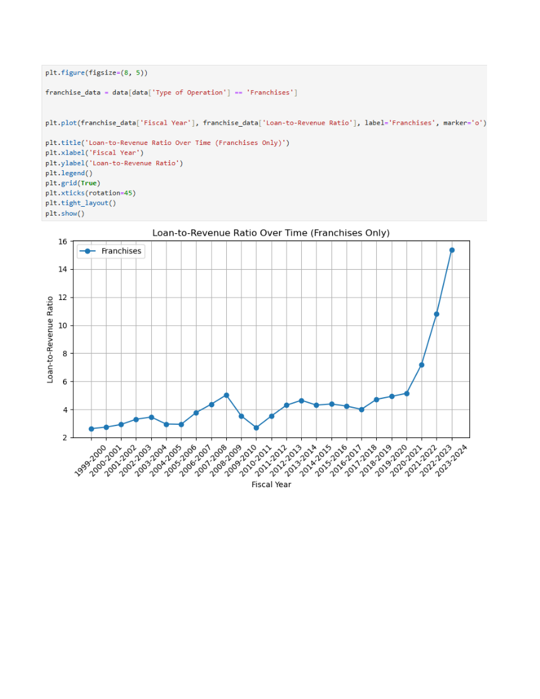
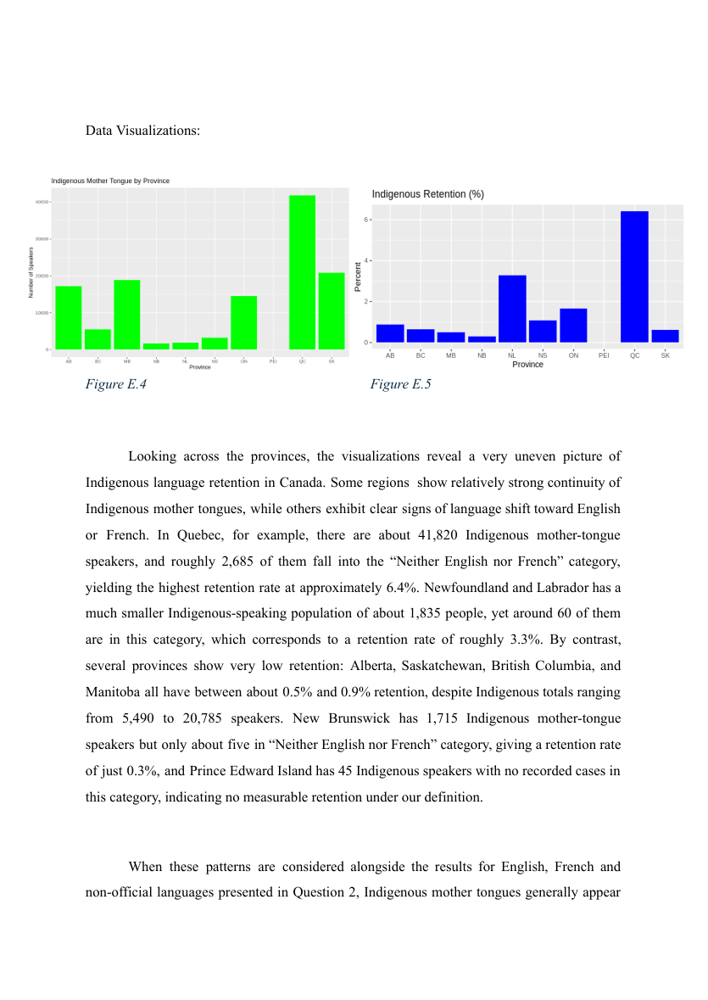

DATA 482 · In progress
Calgary Traffic Incidents: Patterns Across Roads and Seasons
Team · Zach Ma, Kamil Baghirzade, Astorino Giuseppe, and Francis Ibelo
Exploring 2024–2025 incident records with Python and SQLite.
Academic work in data analysis, AI design, and data ethics.
DATA 221 · Team analysis
How did claim rates and borrowing relative to revenue differ between franchises and non-franchises?
View case study
CPSC 383 · Individual design proposal
How could a rental platform flag suspicious listings and explain the warning?
View case studyEvaluation plan: precision, recall, false alarms, missed scams, and uneven error rates across listing types.
DATA 201 · Team analysis
What can census tables tell us about Indigenous mother tongues across provinces?
View case study
DATA 414 · Team case study
How did routine handling of sensitive records weaken the organization’s safeguards?
View case studyDATA 482 · In progress
Team · Zach Ma, Kamil Baghirzade, Astorino Giuseppe, and Francis Ibelo
Exploring 2024–2025 incident records with Python and SQLite.
In progress
Importing community, ward, and civic census files and checking how they can be joined.
View project